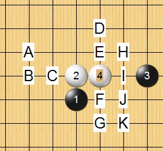

大残月列传（妖刀九传之五）
#1 <font color="Fuchsia">大残月列传（妖刀九传之五）</font>作者：失落刀 发表时间：2008-11-6 7:59:10
嘿嘿，本题为四选一：四个图黑胜一个即可。
图一：
图二：
［本站用户 竹子 于 2009-3-2 23:03:25 花5个金币送您鲜花一朵］
#2 Re:大残月第七题作者：失落刀 发表时间：2008-11-6 8:00:10
图三：
图四：
#3 Re:大残月第七题作者：wrwak 发表时间：2008-11-8 19:41:52
第一幅图黑胜希望大
#4 Re:大残月第七题作者：26 发表时间：2008-11-16 19:29:53
有三个12不会杀，请达人指点一二。
#5 Re:大残月第七题作者：26 发表时间：2008-11-16 19:34:18
最近很流行杀这个10.本图的18也是唯一，有可能黑胜吗？
#6 Re:大残月第七题作者：wrwak 发表时间：2008-11-16 22:02:15
有棋谱就发 不要卖关子
#7 Re:大残月列传（妖刀九传之五）作者：失落刀 发表时间：2008-11-17 20:48:55

参考。
#8 Re:大残月列传（妖刀九传之五）作者：失落刀 发表时间：2008-11-17 22:06:15
参考。
#9 Re:大残月列传（妖刀九传之五）作者：失落刀 发表时间：2008-11-17 22:13:09
参考。
#10 Re:大残月列传（妖刀九传之五）作者：失落刀 发表时间：2008-11-18 17:43:49
最后一个防了，大家一起努力来拆解下。
#11 Re:大残月列传（妖刀九传之五）作者：失落刀 发表时间：2008-11-18 18:12:33
这个6也很有挑战性。黑好还是白好？
若这个6败，则这个4黑二打均必胜。
#12 Re:大残月列传（妖刀九传之五）作者：失落刀 发表时间：2008-11-18 19:02:51
袜子，这个5你拆的情况怎么样了？
#13 Re:大残月列传（妖刀九传之五）作者：失落刀 发表时间：2008-11-18 22:11:29
据传闻：明教之花（无尽）、明教之星（逆刃）有这个5的地毯。图谱与各位参考。
#14 Re:Re:大残月列传（妖刀九传之五）作者：雨一直下 发表时间：2008-11-19 12:27:28
引用：
原文由 失落刀 发表于 2008-11-18 22:11:29 :据传闻：明教之花（无尽）、明教之星（逆刃）有这个5的地毯。图谱与各位参考。
不是传闻啦,确实必胜了
#15 Re:大残月列传（妖刀九传之五）作者：袜子破个洞 发表时间：2008-11-21 17:55:57
12楼活三唯一。其实还有其他5可走。
=======上图对应的爱五子棋谱代码如下，以便你拆解：========
h8h9k9i9i7g9f9g8
======================================================
这个8也基本唯一。
=======上图对应的爱五子棋谱代码如下，以便你拆解：========
h8h9k9i9i7j8k7
======================================================
你图里C点走这个7手可杀。
B点比较简单。
=======上图对应的爱五子棋谱代码如下，以便你拆解：========
h8h9k9i9i7g8j8h6j10
======================================================
［ 失落刀 于 2008-11-23 12:57:38 时奖励此帖[金币加 20 威望加1］谢谢袜子指点。
#16 Re:大残月列传（妖刀九传之五）作者：袜子破个洞 发表时间：2008-11-21 17:59:25
=======上图对应的爱五子棋谱代码如下，以便你拆解：========
h8h9k9g8i11j10k11j11i10j12j9
======================================================
11楼我觉得比较难杀。还有其他强12强防。其他8手应该是基本可杀。不过我没地毯。
#17 Re:大残月列传（妖刀九传之五）作者：失落刀 发表时间：2008-11-22 20:38:28
初步研究了下。第1个5.
#18 Re:大残月列传（妖刀九传之五）作者：失落刀 发表时间：2008-11-22 20:39:04
第2个5.
#19 Re:大残月列传（妖刀九传之五）作者：失落刀 发表时间：2008-11-22 20:39:35
第3个5.
#20 Re:大残月列传（妖刀九传之五）作者：失落刀 发表时间：2008-11-22 20:52:12
论坛不是少数人的，大家都可以参与。
周末娱乐题：白胜。
请指出必胜6坐标，并抓一个图。
第一个回答正确者，赠送威望。
#21 Re:大残月列传（妖刀九传之五）作者：潇洒 发表时间：2008-11-22 22:14:51
必胜6是i10
=======上图对应的爱五子棋谱代码如下，以便你拆解：========
h8h9k9i9f11i10g9g8j11i7i8h7g7i6f9j7f10f12
======================================================
［ 失落刀 于 2008-11-22 22:33:46 时奖励此帖[金币加 20 威望加1］
#22 Re:大残月列传（妖刀九传之五）作者：失落刀 发表时间：2008-11-22 22:34:55
嗯，还有可以胜的6.大家继续还有威望奖励。#23 Re:大残月列传（妖刀九传之五）作者：笑雨辰 发表时间：2008-11-23 1:30:22
=======上图对应的爱五子棋谱代码如下，以便你拆解：========
h8h7k7g8i5g7j6h4g6i6j5j7i7k5l8m9k9j8
======================================================
这个18不会杀
#24 Re:Re:大残月列传（妖刀九传之五）作者：我愛羅 发表时间：2008-11-23 1:32:40
回樓上 我是其他的18不會 就會這個18
#25 Re:Re:大残月列传（妖刀九传之五）作者：wrwak 发表时间：2008-11-23 7:49:08
［ 失落刀 于 2008-11-23 10:04:57 时奖励此帖[金币加 20 威望加1］感谢热情帮助棋友。
#26 Re:Re:Re:大残月列传（妖刀九传之五）作者：笑雨辰 发表时间：2008-11-24 2:27:37
=======上图对应的爱五子棋谱代码如下，以便你拆解：========
h8h7k7g8j6g7i5h4g6i6j5j7i7k5l8m9k9j8j10i11l7k6l9l10k11k8l12i9k13k10m11n10l11n11l14n14k15m10o10j14l13l15m13n13n12o11k12k14m12
======================================================
谢谢
终于杀出来了
［ 失落刀 于 2008-11-26 11:14:55 时奖励此帖[金币加 20 威望加1］祝贺，天道酬勤。
#27 Re:大残月列传（妖刀九传之五）作者：nara 发表时间：2008-11-24 18:30:05
=======上图对应的爱五子棋谱代码如下，以便你拆解：========
h8h7k7g8i5g7j6h4g6i6j5j7i7k5l8m9k9k8
======================================================
23,25楼的,这个18怎么杀啊?
#28 Re:大残月列传（妖刀九传之五）作者：失落刀 发表时间：2008-11-24 21:33:09
27楼朋友，19在5的左边，最强变化，我在7楼发了个图的。#29 Re:Re:大残月列传（妖刀九传之五）作者：我愛羅 发表时间：2008-11-24 23:56:37
引用：
原文由 失落刀 发表于 2008-11-18 18:12:33 :这个6也很有挑战性。黑好还是白好？
若这个6败，则这个4黑二打均必胜。
顯然黑優吧。。
#30 Re:大残月列传（妖刀九传之五）作者：wrwak 发表时间：2008-11-25 16:05:38
5h 这个点是最关键的 一定要抢 否则白都可以充掉 黑子势力分开就很难必胜了#31 Re:大残月列传（妖刀九传之五）作者：nara 发表时间：2008-11-25 18:36:29
5h怎么胜呢?楼上的,把几个强的变化摆出来啊(黑石容易杀出来的不要摆了).#32 Re:大残月列传（妖刀九传之五）作者：木月 发表时间：2008-12-1 21:33:06
学习，继续飘过#33 Re:大残月列传（妖刀九传之五）作者：浪人痴痴 发表时间：2008-12-1 21:41:00
我也是来学习的...大家起进步嘛!~#34 Re:大残月列传（妖刀九传之五）作者：笑雨辰 发表时间：2008-12-6 8:26:29
问题1
=======上图对应的爱五子棋谱代码如下，以便你拆解：========
h8h7k7i7
======================================================
这个4一打的5在哪
问题2 这个10怎么杀
=======上图对应的爱五子棋谱代码如下，以便你拆解：========
h8h9k9i9g9i7i8g8f7h10
======================================================
#35 Re:大残月列传（妖刀九传之五）作者：26 发表时间：2008-12-6 9:25:12
楼上的，我的5见图。

搞不懂哪个可以黑胜，因此也不晓得哪个点是所谓的一打点。
#36 Re:大残月列传（妖刀九传之五）作者：失落刀 发表时间：2008-12-21 15:19:18
=======上图对应的爱五子棋谱代码如下，以便你拆解：========
h8h9k9i9j7i10g9g8j11f9f10i7i8e8
======================================================
5走K败，杀法见天羽该图。
#37 Re:大残月列传（妖刀九传之五）作者：26 发表时间：2009-1-9 15:03:27
这个7可胜。(有朋友问，特意贴图)
#38 Re:大残月列传（妖刀九传之五）作者：wrwak 发表时间：2009-2-16 13:45:45
5h怎么胜都不会 一定是照搬黑石啦#39 Re:大残月列传（妖刀九传之五）作者：失落刀 发表时间：None
≮炫飞☆棋社≯第二届精英对抗赛炫飞☆雨棋评
炫飞09年家族精英赛终于踩着初春的脚步姗姗而至，碰巧我也被安排其中，金融危机后跳槽到新工作环境，时间非常紧张，但家族赛既然已经决定参加，就要好好比完，谁让咱是一个负责任滴好人捏？闲话少叙，比赛总共三轮，第一轮对帅，第二轮对刀娃，第三轮对深蓝，其它就不多说了，选择与帅的两盘回顾一下，也与大家共同探讨。
第一局我开局，
 IP：
已记录
IP：
已记录#40 Re:大残月列传（妖刀九传之五）作者：失落刀 发表时间：2009-2-26 8:25:53
白痴(黑) VS 猪头(白)—38手白胜
#41 Re:大残月列传（妖刀九传之五）作者：刀魂 发表时间：2009-3-15 2:23:16
困了 明天 再来。。。
研究来 研究去 都快神经啦。。。
记得 给我 花花 鼓励一下
#42 Re:大残月列传（妖刀九传之五）作者：学生刀 发表时间：2009-4-14 10:11:51
=======上图对应的爱五子棋谱代码如下，以便你拆解：========
h8i9k9g8i11j10j9k8h11h10g11f11f10i10k10j11h9i7i6h7f7e9e10g5g6f6h4c9d9e8d8e5d7d10e7c7d6d5c5f8g7e4e3e11f12b7a8c11b12c10c8d13d11e13
======================================================
能不能给我加个威望啊 我想发附件
［ 忧郁的双眼 于 2009-4-14 10:35:18 时奖励此帖[金币加 20 威望加1］
#43 Re:大残月列传（妖刀九传之五）作者：忧郁的双眼 发表时间：2009-4-14 10:35:39
鼓励多发研究
哈哈~
#44 Re:大残月列传（妖刀九传之五）作者：陨落之城 发表时间：2009-5-1 16:34:30
=======上图对应的爱五子棋谱代码如下，以便你拆解：========
h8h9k9i7j10i9
======================================================
这个4的打点不知道对否？？？
=======上图对应的爱五子棋谱代码如下，以便你拆解：========
h8h9j10i9k9i7
======================================================
发现这个疏星跟上面的残月刀很像嘛~
#45 Re:大残月列传（妖刀九传之五）作者：失落刀 发表时间：2009-5-1 16:43:10
=======上图对应的爱五子棋谱代码如下，以便你拆解：========
h8h9k9i7j10i9k10
======================================================
#46 Re:大残月列传（妖刀九传之五）作者：陨落之城 发表时间：2009-5-1 19:22:23
谢谢失落刀的帮助。#47 Re:大残月列传（妖刀九传之五）作者：陨落之城 发表时间：2009-5-2 12:11:29
=======上图对应的爱五子棋谱代码如下，以便你拆解：========
h8h9k9i10
======================================================
求2打点
#48 Re:大残月列传（妖刀九传之五）作者：26 发表时间：2009-5-2 12:18:50
=======上图对应的爱五子棋谱代码如下，以便你拆解：========
h8h9k9i10i7
======================================================
=======上图对应的爱五子棋谱代码如下，以便你拆解：========
h8h9k9i10j8
======================================================
#49 Re:大残月列传（妖刀九传之五）作者：26 发表时间：2009-5-2 12:24:14
共同学习。
#50 Re:大残月列传（妖刀九传之五）作者：陨落之城 发表时间：2009-5-2 14:09:17
=======上图对应的爱五子棋谱代码如下，以便你拆解：========
h8h9k9g10i7g8g9j6i11
======================================================这个9对吗？
#51 Re:大残月列传（妖刀九传之五）作者：方圆之外 发表时间：2009-5-3 10:57:55
多少威望能发图呐。。。我截的图好像发不上来。。#52 Re:大残月列传（妖刀九传之五）作者：吐血刀 发表时间：2009-5-3 11:09:43
两个威望就可以发图，你有了呀。#53 Re:大残月列传（妖刀九传之五）作者：孤独一致 发表时间：2009-9-2 15:13:30
=======上图对应的爱五子棋谱代码如下，以便你拆解：========
h8h9k9g10i7g8g9j6i11j7i8j8j9i6h7g6k6k8
======================================================
=======上图对应的爱五子棋谱代码如下，以便你拆解：========
h8h9k9g10i7g8g9j6i11j7i8j8j9i6h7g6k6j4j5k8h5g7f8h10i10i9l8l9m10h12
======================================================
=======上图对应的爱五子棋谱代码如下，以便你拆解：========
h8h9k9g10i7g8g9j6i11f11i8i10j11f10j10e10h10f7e6f9
======================================================
#54 Re:大残月列传（妖刀九传之五）作者：逆刃 发表时间：2009-9-2 15:45:18
LZ这个4至少有三个必胜点。#55 Re:大残月列传（妖刀九传之五）作者：失落刀 发表时间：2009-9-17 17:28:13
=======上图对应的爱五子棋谱代码如下，以便你拆解：========
h8h9k9g10j10a1j8b1i7
======================================================
#56 Re:大残月列传（妖刀九传之五）作者：失落刀 发表时间：2009-9-20 12:24:49
=======上图对应的爱五子棋谱代码如下，以便你拆解：========
h8h9k9j10g8
======================================================
二打可胜的5.供参考。一打I7.
#57 Re:大残月列传（妖刀九传之五）作者：失落刀 发表时间：2009-9-20 12:26:46
=======上图对应的爱五子棋谱代码如下，以便你拆解：========
h8h9k9g9j10o1f9
======================================================
二打可供选择的5.一打I9。
#58 Re:大残月列传（妖刀九传之五）作者：失落刀 发表时间：2009-9-20 12:28:08
=======上图对应的爱五子棋谱代码如下，以便你拆解：========
h8h9k9g8i11a1g9
======================================================
二打可供选择的5.一打J10.
#59 Re:大残月列传（妖刀九传之五）作者：失落刀 发表时间：2009-9-20 12:32:14
=======上图对应的爱五子棋谱代码如下，以便你拆解：========
h8h9k9i9f10a1f9b1g9c1i8d1i7e1j8f1j9g1j10h1i10i1i11
======================================================
我可以选择的5 ，不懂的4.
，不懂的4.
#60 Re:大残月列传（妖刀九传之五）作者：失落刀 发表时间：2009-9-20 14:09:42
=======上图对应的爱五子棋谱代码如下，以便你拆解：========
h8h9k9i9f9
======================================================
#61 Re:大残月列传（妖刀九传之五）作者：失落刀 发表时间：2009-9-20 14:15:55
59楼的5解决一个5奖励一个威望。解决第二个5奖励2个威望，以此类推。#62 Re:大残月列传（妖刀九传之五）作者：26 发表时间：2009-10-3 11:31:52
56楼的5目前无胜,感谢逆刃指出.